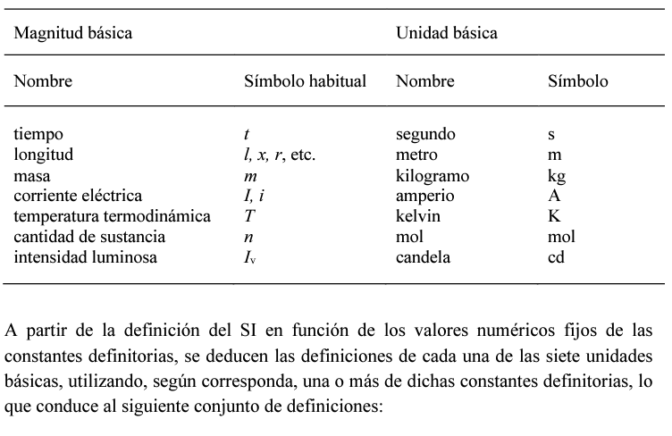
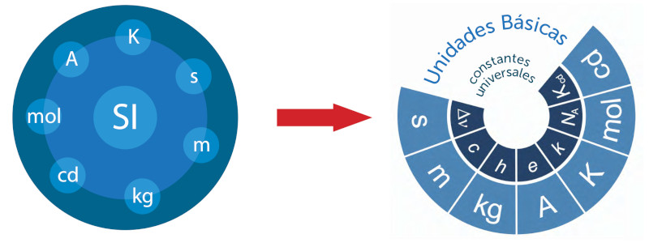

La Oficina Internacional de Pesas y Medidas (BIPM según sus siglas en francés) fue creada por la Convención del Metro, firmada en París el 20 de mayo de 1875 por diecisiete Estados, en la última sesión de la Conferencia Diplomática del Metro. Esta Convención fue modificada en 1921. El BIPM tiene su sede cerca de París, en los terrenos (43 520 m2) del Pabellón de Breteuil (Parque de Saint-Cloud), puesto a su disposición por el Gobierno Francés; su mantenimiento se financia conjuntamente por los Estados Miembros de la Convención del Metro. La misión del BIPM es asegurar la unificación mundial de las mediciones, siendo sus objetivos:

